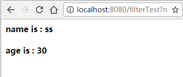

有这样一种场景，如果web服务器在处理客户端的请求时，需要请求者处于登录状态，否则给出权限不足的提示。为了满足该场景，最直接的做法就是在doGet或doPost方法中添加登录验证模块，但是如果该场景出现的地方较多，逐个添加显然不合适。Servlet提供了过滤器，可以动态的拦截请求和响应，可以非常好的满足场景需求。
Servlet过滤器可以实现以下目的：
在客户端的请求访问后端资源之前，拦截这些请求；
在服务器的响应发送回客户端之前，处理这些响应；
过滤器的类型
依据规范建议，过滤器的类型主要有以下几种
身份验证过滤器（Authentication Filters）
数据压缩过滤器 （Data Compression Filters）
加密过滤器（Encryption Filters）
触发资源访问时间过滤器
图像转换过滤器（Image Conversion Filter）
日志记录和审核过滤器（Logging and Auditing Filters）
MIME-TYPE链过滤器（MIME-TYPE Chain Filters）
标记化过滤器（Tokenizing Filters）
XSL/T过滤器（XSL/T Filters），转换为XML内容
Servlet过滤器方法
过滤器是实现了javax.servlet.Filter接口的Java类，该接口定义了三个方法：
public void doFilter(ServletRequest request, ServletResponse response,
FilterChain chain) throws IOException, ServletException;
该方法完成实际的过滤操作，当客户端请求方法与过滤器设置的URL匹配时，
Servelt容器将首先调用过滤器的doFilter方法，chain为过滤器链，用户将
访问后续过滤器；
public void init(FilterConfig filterConfig) web应用程序启动时，web服务器将创建Filter的实例对象，并调用其init()方法， 读取web.xml的配置，完成对象的初始化功能，从而为后续的用户请求做好拦截的准备工作， filter对象只会创建一次，init方法也只执行一次。通过init方法的参数，可以获得代表 当前filter配置的FilterConfig对象。
public void destory() Servlet容器在销毁过滤器实例前调用该方法，释放Servlet过滤器占用的资源；
Servlet过滤器的实例
Servlet 3.0 新增了若干注解，用于简化 Servlet、过滤器（Filter）和监听器（Listener）的声明，这使得 web.xml 部署描述文件从该版本开始不再是必选的了。
下面是一个正常的servlet实例：
@WebServlet(name="filterTest",urlPatterns={"/filterTest"})
public class FilterServlet extends HttpServlet {
public void doGet(HttpServletRequest request, HttpServletResponse response)
throws IOException {
PrintWriter pw = response.getWriter();
response.setContentType("text/html;charset=UTF-8");
pw.append("<html><head><title>filter test</title></head>")
.append("<body>");
pw.append("<h4>name is : " + request.getParameter("name") + "</h4>");
Integer age = Integer.valueOf(request.getParameter("age"));
pw.append("<h4>age is : " + age + "</h4>");
pw.append("</body>")
.append("</html>");
pw.flush();
pw.close();
}
}
启动运行，输入请求地址：http://localhost:8080/filterTest?name=ss&age=30

下面我们添加一个过滤器，如果age参数的值超过100或者小于0，给出错误提示：
@WebFilter(filterName="ageFilter", servletNames={"filterServlet"},
urlPatterns="/filterTest")
public class AgeFilter implements Filter {
@Override
public void init(FilterConfig filterConfig) throws ServletException {
}
@Override
public void doFilter(ServletRequest request, ServletResponse response,
FilterChain chain) throws IOException, ServletException {
if(request.getParameter("age") == null && Integer.valueOf(request.getParameter("age")) < 0 ||
Integer.valueOf(request.getParameter("age")) > 100){
PrintWriter pw = response.getWriter();
pw.append("illegal age");
return;
} else {
chain.doFilter(request, response);
}
}
@Override
public void destroy() {
}
}
如果使用url:http://localhost:8080/filterTest?name=ss&age=130请求，拦截器生效
之前我们控制多个filter的执行顺序是通过web.xml中控制filter的位置来控制的，放在上面的会比放在下面的先执行，但是使用注解@WebFilter之后，发现注解里面没有提供可以控制执行顺序的参数。如果存在多个filter，那么执行的先后顺序与filter的文件名有关。
添加一个新的filter:
@WebFilter(filterName="NameFilter", servletNames={"filterServlet"}, urlPatterns="/filterTest")
public class NameFilter implements Filter {
@Override
public void init(FilterConfig filterConfig) throws ServletException {
}
@Override
public void doFilter(ServletRequest request, ServletResponse response,
FilterChain chain) throws IOException, ServletException {
System.out.println("name filter");
chain.doFilter(request, response);
}
@Override
public void destroy() {
}
}
执行url:http://localhost:8080/filterTest?name=ss&age=30
在后台打印结果：
age filter name filter
可以发现，是AgeFilter先执行，NameFilter后执行；
如果将NameFilter的名称修改为aaNameFiler，那么运行结果为：
age filter aaname filter
那么运行结果并没有改变，这是因为只修改了@WebFilter注解的filterName，而Filter的顺序是与Filter Class Name有关的。
创建一个新的Filter，名为AAFilter，那么运行一下：
aa filter age filter aaname filter
可以发现，Filter的运行顺序是与Filter的ClassName有关的；
Filter的执行流程
当客户端发出Web资源的请求时，Web服务器根据应用程序配置文件设置的过滤规则进行检查，若客户请求满足过滤规则，则对客户请求／响应进行拦截，对请求头和请求数据进行检查或改动，并依次通过过滤器链，最后把请求／响应交给请求的Web资源处理。请求信息在过滤器链中可以被修改，也可以根据条件让请求不发往资源处理器，并直接向客户机发回一个响应。当资源处理器完成了对资源的处理后，响应信息将逐级逆向返回。同样在这个过程中，用户可以修改响应信息，从而完成一定的任务。
每个过滤器都接受当前的请求和响应，且FilterChain过滤器链中的过滤器（应该都是符合条件的）都会被执行。doFilter方 法中，过滤器可以对请求和响应做它想做的一切，通过调用他们的方法收集数据，或者给对象添加新的行为。过滤器通过传送至 此方法的FilterChain参数，调用chain．doFilterO将控制权传送给下一个过滤器。当这个调用返回后，过滤器可以在它的 Filter方法的最后对响应做些其他的工作。如果过滤器想要终止请求的处理或得到对响应的完全控制，则可以不调用下一个过滤 器，而将其重定向至其它一些页面。当链中的最后一个过滤器调用chain．doFilterO方法时，将运行最初请求的Servlet。
该流程可以用下图来表示：

总结
servlet的过滤器的使用比较简单，可以帮我们解决很多实际用的问题。